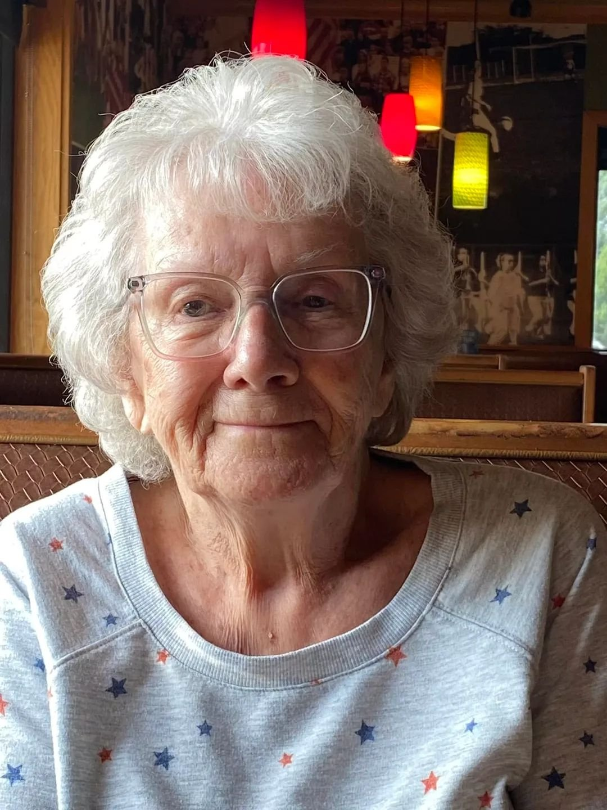
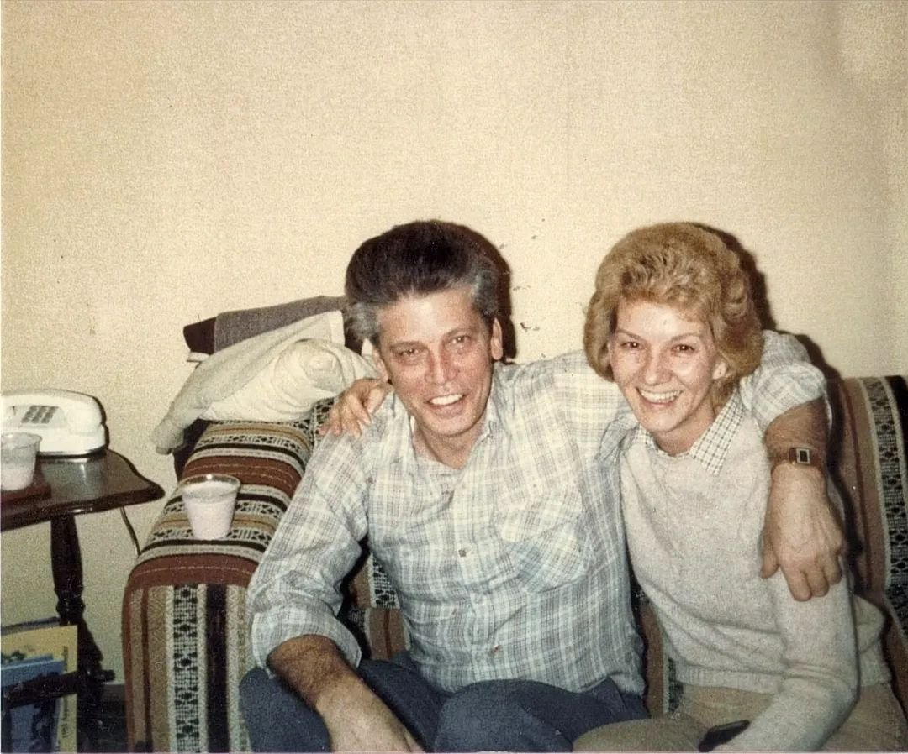

Arline (Stone) Brewster Gayhart
Birth date unresolved · Geni: 22 February 1938; 1940 census age suggests circa 1936–1937 · Living as of December 2025
Quick Facts
Immediate Family
Parents
Spouses
- Earl Brewster (1935–1959)
- Wilkie Gayhart
Children
- Earl Brewster Jr.
- Cheryl Ann (Brewster) Horne (2 October 1956 – 23 May 2015)
- Maureen Fields
- Carolyn Coomes
- Adele Bowen
- Kristy Ann (Gayhart) Duckett (25 December 1961 – 18 December 2025)
On Family Tree Sites
Couple Folder
Life Timeline
Birth date unresolved · Geni reports 22 February 1938 without a source; the 1940 census transcription gives age 3 on 1 April 1940, implying about 1936–1937. No original Ohio birth record reviewed.
By Jul 1953Married to Earl Brewster ; while he served with the Marines in Korea she lived with his parents at 519 E. 12th Street, Cincinnati
27 Jul 1953Earl was wounded during the 24–27 July 1953 Hill 111 fighting. The family newspaper reports 27 July and names her as "Mrs. Arlene Brewster"; Fold3 dates his casualty 24 July
2 Oct 1956Daughter Cheryl Ann born in Cincinnati
22 Mar 1959Widowed when Earl was killed in a car crash in Kentucky
By 1961Married Wilkie Gayhart
25 Dec 1961Daughter Kristy Ann Gayhart born in Cincinnati
23 May 2015Her daughter Cheryl Horne died; Arline was then living in Cincinnati
18 Dec 2025Her daughter Kristy Duckett died; Arline survived her
Life Story
A Geni family-tree entry reports that Arline Stone was born February 22, 1938, and names William and Ruth Stone as her parents. The entry has no attached sources, so the date and parent names remain unverified; the parents are therefore left unknown in the evidence-based family summary. By July 1953, Arline was married to Earl Brewster and living with his parents on East 12th Street in Cincinnati while Earl served with the Marines in Korea. The contemporary family newspaper report naming "Mrs. Arlene Brewster" supports the marriage by that date. Their daughter Cheryl Ann was born in Cincinnati in 1956, and Earl Jr. is remembered in the family as Earl's son. Her Geni birth date (22 February 1938) conflicts with the 1940 census age, which suggests about 1936–1937; the exact birth date remains unverified.
Earl died in March 1959. By the birth of Kristy on December 25, 1961, Arline was married to or partnered with Wilkie Gayhart; Kristy's obituary explicitly names Wilkie and Arline as her parents. Cheryl's obituary explicitly names Earl and Arline as her parents. The family and obituary records identify six children in Arline's family group, but do not establish Earl as the father of every child listed; the profile preserves those distinctions. Arline was named as a surviving mother in Kristy's 2025 obituary.
Photo Gallery


Sources and Evidence
- Newspaper article, "Pvt. Earl Brewster wounded on final day," about 28–31 July 1953 (paper not named; clipping in the family collection): "PFC Brewster, husband of Mrs. Arlene Brewster, also of the Twelfth Street address"
- Obituary of Cheryl Ann Brewster Horne, Warlick Funeral Home, Lincolnton, North Carolina, posted 24 May 2015: born October 2, 1956, in Cincinnati "to Arline Stone Gayhart and the late Earl Brewster"; survived by "her mother, Arline Gayhart of Cincinnati," a brother Earl Brewster, and sisters Carolyn Coomes, Adele Bowen, Maureen Fields and Kristy Duckett (the heading misprints her birth year as 1946)
- Obituary of Kristy Ann Duckett, Hodapp Funeral Homes, 2025: "born Kristy Ann Gayhart to Wilkie and Arline Gayhart on December 25, 1961, in Cincinnati"; died 18 December 2025; "survived by her mother, Arline Gayhart"; "preceded in death by her father, Wilkie Gayhart, and her sister, Cheryl Horne"; names her siblings Earl Brewster, Carolyn Coomes, Adele Bowen and Maureen Fields
- Earl Brewster's Kentucky death record and his VA grave marker, Spring Grove Cemetery: his death on 22 March 1959 (see his page)
- Geni, Arline Gayhart (Stone), read 6 November 2026: reports birth 22 February 1938 and parents William Stone and Ruth Stone, but has no sources, documents or photos attached; use these details as unverified leads only
- Fold3 U.S. Marine Corps Casualty Index, Earl Brewster, and Paul I. Gulick's H/3/1 Marines in Korea: casualty index dates Earl's wounding 24 July 1953; family newspaper says 27 July; H/3/1 was in the Hill 111 fighting 24–27 July.
- 1940 U.S. CENSUS, Cincinnati Ward 6 household transcription (FamilySearch KWPD-SBP) — Prior project transcription lists William 30, Ruth 29, May Ellen 8, Arline 3; original page/relationship fields not reviewed here.
- Find a Grave, Mary Ellen Stone Thompson, memorial 62267367 — Reproduces obituary naming William and Helen Margaret Abel Stone as her parents and “one sister, Arlene Stone.”
- Ohio death-index entry for Helen Margaret Stone (FamilySearch X692-KBP) — Prior project notes report Helen died 1 June 1932, age 22, wife of William; the FamilySearch page could not be reopened in this pass.
Person Archive
Browse the records and materials preserved for Arline (Stone) Brewster Gayhart in the American Bloodline Master Archive.
- Photographs and images
- Family photographs
- Headstone photographs
- Documents and records
- Research notes
- Sources
- Family books
Research Notes and Open Questions
Additional Quick-Fact Details
- Status: Living as of December 2025, when her daughter Kristy's obituary named her as Kristy's surviving mother
Existing 1940 census transcription: William Stone (30), Ruth Stone (29), May Ellen (8), and Arline (3) at 1307 (rear) Pendleton Street, Cincinnati. The FamilySearch index page did not open and the original schedule’s relationship column was not reviewed.
Mary Ellen Stone Thompson’s reproduced obituary identifies William and first wife Helen Margaret Abel Stone as Mary Ellen’s parents and calls Arlene Stone her sister. This supports a likely paternal half-sister relationship. The census “May Ellen” may be Mary Ellen, but the ages differ by about a year; retain the identity link as likely, not proven from the census image.
Arline’s GENI birth date 22 February 1938 conflicts with age 3 in April 1940 (about 1936–1937); no Ohio birth record has been inspected. William’s own parents and siblings and Ruth’s maiden name, parents and siblings remain unknown; no Gen VII ancestor profiles were created for unnamed people.
- Marriage records: Earl Brewster × Arline Stone, about 1952–53 (Hamilton County, Ohio, or Kenton or Campbell County, Kentucky); Wilkie Gayhart × Arline Brewster, about 1959–61. Either would confirm her parents and birth date.
- Birth: check the Ohio Birth Index for an Arline (or Arlene) Stone born 22 February 1938 to confirm the Geni date and her parents William and Ruth Stone.
- Wilkie Gayhart: his dates are not known and no obituary has been found yet.
- Paternity of Maureen, Carolyn and Adele: Ohio birth records for each child would settle which were Earl's and which Wilkie's.
- Spelling: "Arlene" in the 1953 newspaper; "Arline" in both obituaries and on Geni. The later spelling is used here.
- Photo: portrait placed 7 November 2026, from a family photo shared by a family member.
- Arline's profile is filed in Earl Brewster's folder, like other spouses in their partner's folder.
DNA
No DNA matches linked yet.
Family Notes
No family-notes link is listed on this profile.
Profile history: Updated 7 November 2026: her children linked to their profile Docs; Maureen and Adele ruled Earl’s daughters. Updated 7 November 2026 with her portrait photo. Updated 6 November 2026 with her maiden name, birth date and parents (tree claims), both marriages, her six children, a timeline, life story and sources.